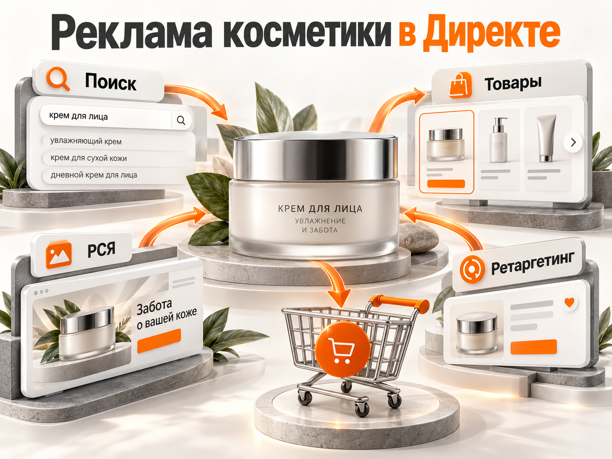

Блог о платном трафике
Продвижение косметического бренда: как привлечь покупателей и рассчитать бюджет
Продвижение нового косметического бренда лучше начинать с одного-двух перспективных продуктов, понятного позиционирования и проверки рекламной экономики. Яндекс Директ помогает привлекать покупателей, которые уже ищут косметику определённой категории, но сам по себе не создаёт доверие к неизвестной марке. Поэтому рекламу нужно сочетать с качественными карточками товаров, отзывами, демонстрацией продукта и работой с повторными продажами.
В 2026 году для продвижения косметики в России доступны Поиск и РСЯ Яндекса, товарная реклама, маркетплейсы, VK, Telegram и интеграции с блогерами. Выбор зависит от ассортимента, среднего чека, маржинальности и того, продаёт ли бренд через собственный сайт или через торговые площадки.
Главный вопрос перед запуском не только в том, сколько стоит реклама, но и в том, сколько бренд может позволить себе потратить на привлечение первой покупки. Ниже разберём актуальную статистику российского рынка, реальные кейсы и расчётный прогноз для нового бренда уходовой косметики.
Рынок косметики в России в 2026 году: есть ли место новым брендам
Рынок онлайн-продаж косметики растёт, но рост категории не гарантирует успех новому производителю.
По исследованию Easy Commerce, опубликованному группой Okkam в сентябре 2026 года, продажи пяти крупных бьюти-подкатегорий на Wildberries, Ozon и Яндекс Маркете в первом полугодии достигли 504 млрд рублей. Это на 42% больше аналогичного периода 2025 года.
В исследовании учитывались уходовая и декоративная косметика, парфюмерия, мужской уход и бьюти-гаджеты. Это не объём всего российского косметического рынка.
| Площадка | Динамика продаж категории за I полугодие 2026 года |
|---|---|
| Ozon | +70% |
| Wildberries | +37% |
| Яндекс Маркет | -6% |
Это оценки Easy Commerce. Wildberries сообщил о собственном росте категории на 15% в денежном выражении, поэтому показатели разных исследований следует сравнивать с учётом методики.
Особенно заметна уходовая косметика. В первом полугодии 2026 года её продажи составили 83 млрд рублей на Ozon и 142 млрд рублей на Wildberries.
Спрос есть. Но покупатель одновременно видит товары известных производителей, предложения с большим количеством отзывов и более дешёвые аналоги.
Небольшому бренду недостаточно выпустить качественный крем или сыворотку. Нужно объяснить, почему покупатель должен выбрать именно этот продукт, доверить ему уход за кожей и заплатить заявленную цену.
Почему продвигать неизвестный косметический бренд сложнее, чем обычный интернет-магазин
Магазин, который продаёт известные марки косметики, уже получает часть доверия благодаря названиям производителей. Новый собственный бренд вынужден формировать это доверие практически с нуля.
Здесь возникают четыре основные сложности.
1. Покупатель не знает название бренда. Если человек ищет конкретную известную сыворотку, спрос уже сформирован. У нового бренда практически нет собственных брендовых запросов. Приходится конкурировать за категорийный и проблемный спрос.
2. Косметику сложно оценить до покупки. Состав, текстура, аромат, ощущения на коже и результат использования не всегда понятны по фотографии. Покупатель ищет отзывы, демонстрации и подтверждение заявленных свойств.
3. Первая покупка может быть дорогой. Деньги приходится тратить не только на привлечение клика, но и на объяснение преимуществ продукта. Поэтому стоимость первой продажи может оказаться выше маржи от заказа.
4. Покупатель сравнивает с альтернативами. На маркетплейсах рядом с новым брендом могут находиться десятки похожих товаров. При одинаковой цене покупатель нередко отдаёт предпочтение варианту с более понятной репутацией и отзывами.
Отсюда практический вывод: рекламировать только название нового бренда недостаточно. Сначала нужно найти конкретную потребность, для которой продукт будет убедительным решением.
Например, вместо абстрактного сообщения о новой линейке косметики можно продвигать конкретную категорию: мягкий очищающий гель, увлажняющий крем без отдушки или набор ухода за волосами. Обещания должны соответствовать реальным свойствам товара.
С чего начинать продвижение косметического бренда
Начинать следует с выбора продукта, целевой аудитории и расчёта экономики. Полноценную рекламную стратегию нельзя строить исключительно вокруг красивой упаковки или общей концепции бренда.
Выберите продукт, который проще объяснить и продать
Для первоначального тестирования не обязательно продвигать весь ассортимент.
Если у бренда десять продуктов, можно выбрать два, которые:
- решают понятную покупателю задачу;
- имеют конкурентоспособную цену;
- обладают достаточной маржинальностью;
- доступны для регулярных поставок;
- позволяют собрать привлекательный комплект или набор.
Особенно важно учитывать потенциальную повторную покупку. Например, у расходуемого уходового средства она может происходить естественнее, чем у косметического аксессуара с длительным сроком использования.
Но сама возможность повторной покупки ещё не означает высокий LTV. Частоту заказов и удержание клиентов нужно измерять.
Определите конкурентное преимущество
Покупателю нужна конкретная причина попробовать незнакомую косметику.
Это может быть удобный формат, определённая текстура, особенности состава, подходящая конкретной аудитории формула, подтверждённое качество или предложение набора по привлекательной цене.
Формулировка «натуральная косметика высокого качества» сама по себе слишком общая. Сравните её с более предметным описанием: «Очищающий гель без отдушки, с подробным составом и демонстрацией текстуры».
Второе предложение даёт человеку больше информации для выбора, хотя и не гарантирует продажу.
Подготовьте посадочную страницу и карточки товаров
На собственном сайте покупателю нужно быстро показать цену, объём упаковки, состав, способ применения, фотографии продукта, условия доставки и оплаты.
Для малоизвестного бренда особенно полезны реальные фотографии текстуры, видео использования, информация о производителе и достоверные отзывы.
На маркетплейсах действуют те же принципы. При этом карточка должна быть понятна без знакомства с сайтом бренда.
Недостаточная информация о товаре снижает эффективность даже хорошо настроенной рекламы.
Как продвигать косметический бренд в Яндекс Директе
Яндекс Директ имеет смысл использовать прежде всего для привлечения сформированного товарного спроса, тестирования продуктовых предложений и возвращения заинтересованных покупателей.
У нового бренда обычно нет достаточного количества запросов с собственным названием. Поэтому основой первоначального продвижения становятся категории, характеристики и потребности аудитории.
Поисковая реклама
Поиск подходит для работы с людьми, которые уже ищут определённый продукт.
Запросы можно разделить по уровню готовности к покупке.
| Группа запросов | Пример | Особенность |
|---|---|---|
| Товарные | купить увлажняющий крем для лица | Выраженное намерение приобрести товар |
| Категорийные | сыворотка для лица | Большой выбор альтернатив |
| По характеристикам | крем без отдушки | Важны конкретные свойства |
| Информационные | как выбрать крем для сухой кожи | Человек ещё изучает решение |
| Брендовые | название собственного бренда | Актуальны после появления узнаваемости |
Для нового бренда разумно сначала проверить коммерческие запросы, по которым предложение действительно конкурентоспособно.
Не нужно пытаться охватить весь рынок косметики. Широкие слова вроде «косметика» могут приводить слишком разнородную аудиторию.
Отдельного внимания требуют запросы с медицинскими ожиданиями: «лечение акне», «от дерматита» и подобные. Если товар является обычной косметикой, нельзя обещать ему лечебные свойства без соответствующих оснований и документов.
В поисковых кампаниях также необходимо контролировать реальные поисковые запросы, географию доставки, минус-слова и эффективность отдельных товарных категорий.
Реклама в РСЯ
РСЯ помогает показать продукт людям, которые ещё не искали конкретную торговую марку.
Для косметики это особенно интересно благодаря возможности использовать изображения и видеокреативы. Можно демонстрировать упаковку, текстуру, применение средства и конкретный сценарий использования.
На первоначальном тестировании стоит сравнить несколько разных сообщений:
- продукт и его функциональные свойства;
- проблему или потребность покупателя;
- преимущества набора;
- предложение для первой покупки.
Важный момент: РСЯ не следует оценивать только по низкой цене клика. Дешёвые переходы бесполезны, если покупатели не оформляют и не оплачивают заказы.
Также необходимо отдельно проверять эффективность новых аудиторий и ретаргетинга. Последний возвращает людей, которые уже посещали сайт или взаимодействовали с товарами, но не завершили покупку.
Товарные кампании и ЕПК
Для интернет-магазина косметики товарная реклама обычно заслуживает отдельного тестирования.
В Яндекс Директе можно использовать Товарную кампанию в Мастере кампаний и Единую перфоманс-кампанию в экспертном режиме.
Объявления могут формироваться на основе сайта или товарного фида с информацией о названии, цене, наличии и изображениях.
Такие форматы позволяют показывать конкретный товар, а не только общее рекламное сообщение о магазине.
Однако автоматическое создание объявлений не гарантирует прибыльности. Если на сайте неверные цены, слабые карточки или неудобная покупка, рекламный алгоритм не устранит эти проблемы.
Для нового бренда также важно не перегружать аккаунт десятками кампаний и целей. Если покупок мало, дробление данных может мешать обучению автоматических стратегий.
На старте при небольшом количестве оплаченных заказов нельзя автоматически выбирать оплату за конверсии и задавать произвольную низкую стоимость покупки. Нужно учитывать объём статистики, ограничения стратегии и реальные возможности бюджета.
Если продажи идут через маркетплейсы
В Яндекс Директе есть специальный формат «Продажи на маркетплейсах», который поддерживает продвижение магазинов на Яндекс Маркете, Ozon, Wildberries и Авито.
Для Яндекс Маркета и Ozon предусмотрены интеграции с передачей данных о покупках. Условия оплаты и атрибуции различаются по площадкам, поэтому перед запуском нужно проверить выбранную модель.
Это важная возможность для бренда, у которого ещё нет собственного интернет-магазина.
Но внешний рекламный бюджет нужно учитывать вместе с внутренним продвижением маркетплейса, комиссиями и логистикой. Иначе стоимость привлечения клиента будет занижена.
На старте важнее получить данные о реальных покупках, чем распределить небольшой бюджет на десятки кампаний.

Какие ещё каналы продвижения косметического бренда использовать в России
Яндекс Директ лучше рассматривать как часть системы продвижения, а не единственный источник покупателей.
| Канал | Основная задача | Что учитывать |
|---|---|---|
| Wildberries и Ozon | Первые продажи и проверка спроса | Комиссии, логистика, отзывы, внутренняя реклама |
| Яндекс Маркет | Дополнительные продажи и развитие ассортимента | Экономика размещения и качество карточек |
| VK Реклама | Знакомство с продуктом и тестирование креативов | Качество трафика и фактические покупки |
| Telegram и блогеры | Объяснение продукта и формирование доверия | Соответствие аудитории, маркировка рекламы |
| SEO и контент | Привлечение поискового спроса в долгосрочной перспективе | Время на получение органического трафика |
Для нового бренда может оказаться полезнее сотрудничество с несколькими небольшими авторами, чья аудитория действительно интересуется уходом, чем дорогое размещение у крупного блогера с широкой аудиторией.
Однако заранее считать небольших блогеров более выгодными нельзя. Эффективность нужно определять по стоимости размещения, переходам, промокодам, покупкам и последующему поведению аудитории.
На первом этапе лучше выбрать два основных источника трафика, а не одновременно запускать все доступные площадки.
Реальные кейсы продвижения косметики: какие результаты получают компании
Публичные кейсы позволяют увидеть, какие подходы используются на рынке. Но показатели известных магазинов и действующих брендов нельзя автоматически переносить на запуск нового производителя.
OPP-Shop: ДРР 13% в Яндекс Директе
В опубликованном кейсе агентства Lead Zeppelin интернет-магазин профессиональной косметики OPP-Shop получил средний ДРР 13% за период с июля 2025 по июнь 2026 года.
По данным авторов кейса, выручка с рекламы выросла на 14%, а рекламные расходы снизились на 7% относительно предыдущего периода.
Однако магазин продаёт профессиональную косметику известных производителей. Люди могут приходить уже со сформированным спросом на конкретные марки.
Поэтому ДРР 13% нельзя считать нормой для нового косметического бренда, о котором покупатели ещё ничего не знают.
EMRA: рост заказов на Яндекс Маркете
Российский бренд средств для ухода за полостью рта EMRA в апреле 2026 года рассказал о развитии продаж на Яндекс Маркете.
За период с декабря по март GMV бренда на площадке вырос на 47,7%, количество заказов увеличилось на 37,5%.
Компания связывает развитие продаж с качеством карточек, контентом, акциями и инструментами продвижения внутри маркетплейса.
Отдельно интересен сам подход к позиционированию: бренд не пытался конкурировать только по цене с массовыми производителями зубной пасты, а выделял продукт за счёт дизайна, формата и впечатления от использования.
Это пример развития уже существующего бренда, а не финансовый прогноз для компании, только выходящей на рынок.
Интернет-магазин японской косметики: пример из моей практики
В одном из моих проектов Яндекс Директ использовался для продвижения интернет-магазина японской косметики.
За первые 20 дней рекламы в феврале 2022 года результаты составили:
- рекламные расходы: 64 227 ₽;
- выручка по электронной коммерции: 656 806 ₽;
- оплаченные заказы: 46;
- средний чек: 14 278 ₽;
- стоимость заказа: около 1396 ₽.
В проекте применялись поисковые кампании, товарная реклама и другие форматы продвижения.
Но здесь были другой период, высокий средний чек и ассортимент уже существовавших косметических марок. Поэтому использовать полученную стоимость покупки как ориентир для неизвестного бренда в 2026 году неправильно.
Полный разбор: Яндекс Директ для магазина японской косметики.
Что показывают эти примеры? Товарная реклама, работа с ассортиментом, правильное позиционирование и измерение продаж действительно могут приносить результат. Но публичных данных недостаточно, чтобы назвать универсальную среднюю стоимость привлечения покупателя нового косметического бренда.
Поэтому следующий прогноз построен на открытых допущениях, которые можно заменить цифрами конкретного бизнеса.
Сколько стоит продвижение косметического бренда: расчёт рекламного бюджета
Начинать расчёт следует не с цены клика в Яндекс Директе, а с экономики заказа.
Допустим, бренд выпускает уходовую косметику и продаёт её через собственный интернет-магазин.
Возьмём следующие условные показатели:
| Параметр | Значение |
|---|---|
| Средний чек | 2500 ₽ |
| Переменные расходы на заказ | 1625 ₽ |
| Остаток до рекламы и постоянных расходов | 875 ₽ |
| Маржинальный остаток | 35% |
В переменные расходы в этом примере включены себестоимость продукции, упаковка, обработка заказа, доставка за счёт продавца, эквайринг и другие непосредственно связанные с продажей затраты.
Все суммы условные. Они не являются средними показателями российского рынка косметики.
Получается, что максимальная стоимость привлечения заказа до выхода в ноль по переменным расходам составляет 875 ₽.
Если первая покупка обходится дороже, она не окупается без последующих продаж или другой дополнительной выручки.
При этом даже стоимость привлечения 875 ₽ не означает полноценной прибыльности бизнеса: ещё остаются постоянные расходы, налоги и затраты на управление.
Прогноз на рекламный тест с бюджетом 60 000 ₽
Яндекс в рекомендациях марта 2026 года приводит ориентир около 30 000 ₽ в неделю для первоначального тестирования Директа в среднем по бизнесам.
Для нашей расчётной модели возьмём 60 000 ₽ рекламных расходов на две недели. Это не обязательный бюджет косметического бренда и не гарантия достаточного количества данных.
Посмотрим, что получится при разных сочетаниях цены клика и конверсии сайта.
| Показатель | Благоприятный сценарий | Базовый сценарий | Неблагоприятный сценарий |
|---|---|---|---|
| Рекламный бюджет | 60 000 ₽ | 60 000 ₽ | 60 000 ₽ |
| Цена клика | 25 ₽ | 40 ₽ | 60 ₽ |
| Клики | 2400 | 1500 | 1000 |
| Конверсия в заказ | 4% | 2% | 1% |
| Заказы | 96 | 30 | 10 |
| Стоимость заказа | 625 ₽ | 2000 ₽ | 6000 ₽ |
| Выручка | 240 000 ₽ | 75 000 ₽ | 25 000 ₽ |
| ДРР | 25% | 80% | 240% |
| Остаток после переменных расходов и рекламы | +24 000 ₽ | -33 750 ₽ | -51 250 ₽ |

Это три математических сценария, а не опубликованные показатели рекламных кампаний и не оценка вероятности результатов. Фактические CPC и конверсию нужно получать из прогноза Директа и тестов конкретного предложения.
В благоприятном сценарии цена заказа составляет 625 ₽. После переменных расходов и рекламы остаётся 24 000 ₽, из которых ещё необходимо покрыть постоянные затраты.
В базовом сценарии заказ обходится в 2000 ₽ при допустимых 875 ₽. Продажи есть, но каждая первая покупка приносит отрицательный финансовый результат.
В неблагоприятном сценарии расходы на рекламу превышают всю выручку. Такое возможно математически и показывает риск низкой конверсии.
Как определить необходимую конверсию сайта
Если бренд может потратить на привлечение заказа максимум 875 ₽, а клик стоит 40 ₽, минимальная конверсия в покупку рассчитывается так:
40 / 875 × 100% = 4,57%.
То есть при данной цене клика сайту необходимо превращать в оплаченные заказы примерно 4,6% рекламных переходов, чтобы покрыть только переменные расходы и рекламу.
Это не норматив конверсии для косметического интернет-магазина. Это индивидуальное требование экономики выбранного примера.
Если такая конверсия недостижима, следует менять условия: повышать средний чек, увеличивать маржу, улучшать предложение, снижать стоимость клика или искать другой способ привлечения покупателей.
Почему первая продажа может быть убыточной, а реклама всё равно иметь смысл
У косметики есть важное отличие от многих товаров длительного использования: часть покупателей возвращается за следующей упаковкой.
Но рассчитывать на повторные покупки можно только при наличии данных.
Предположим, новый клиент оформил первый заказ на 2500 ₽, а компания потратила на его привлечение 1200 ₽. При маржинальном остатке 875 ₽ первый заказ убыточен на 325 ₽ до постоянных расходов.
Если клиент позднее совершит ещё один заказ с таким же остатком 875 ₽ без дополнительных затрат на привлечение, общий результат двух покупок составит:
875 + 875 - 1200 = 550 ₽.
Но нельзя заранее считать, что все покупатели вернутся.
Для оценки LTV следует измерять долю клиентов, совершивших повторную покупку, время между заказами, средний чек последующих покупок и расходы на удержание.
Особенно важно не подменять реальную прибыль потенциальным LTV. Если компания несёт убытки по первой покупке, ей необходим финансовый запас, а не только ожидание будущих заказов.
Как измерять эффективность рекламы косметического бренда
Основная цель рекламы интернет-магазина косметики - оплаченные заказы и их экономический результат, а не количество кликов или добавлений в корзину.
Для собственного сайта следует подключить Яндекс Метрику и электронную коммерцию, чтобы получать данные о просмотре товаров, корзинах, оформленных покупках и выручке.
При возможности отдельно фиксируют отмены, возвраты и фактическую оплату, поскольку оформленный заказ не всегда превращается в выкупленную покупку.
Для маркетплейсов необходимо сопоставлять данные рекламных кабинетов с отчётами площадок. Важно не суммировать одну покупку несколько раз, если её одновременно приписывают себе разные рекламные системы.
Основные показатели:
| Метрика | Что показывает |
|---|---|
| CPC | Стоимость рекламного перехода |
| Конверсия | Долю переходов, завершившихся покупкой |
| CAC / CPA покупки | Стоимость привлечения оплаченного заказа или нового покупателя по выбранной методике |
| Средний чек | Выручку на заказ |
| ДРР | Долю рекламных расходов в выручке |
| Маржинальный остаток | Деньги после переменных расходов, доступные для рекламы и покрытия постоянных затрат |
| Повторные покупки | Реальное удержание покупателей |
Особенно важно различать стоимость заказа и стоимость нового клиента. Один покупатель способен оформить несколько заказов, а часть рекламных конверсий может приходиться на тех, кто уже знаком с брендом.
Подробнее о финансовой оценке рекламы: что такое ДРР и как его считать.
Какие ошибки чаще всего мешают продвижению нового косметического бренда
Запуск рекламы без расчёта маржи. Даже хорошие показатели CTR и количества покупок ничего не говорят о прибыльности, если стоимость привлечения превышает доступный остаток с заказа.
Попытка рекламировать сразу весь ассортимент. Бюджет распределяется между множеством товаров, а статистики по отдельным предложениям оказывается недостаточно.
Конкуренция только по цене. Известный производитель или крупный продавец может обладать преимуществом в себестоимости и закупках. Для небольшого бренда постоянный демпинг способен сделать рекламу нерентабельной.
Отсутствие доверия на сайте. Недостаточно показать красивый флакон. Нужно дать покупателю возможность разобраться в продукте, составе, применении и условиях покупки.
Оценка маркетплейсов только по выручке. Комиссия, хранение, логистика, возвраты и внутреннее продвижение могут существенно менять финансовый результат.
Оптимизация рекламы по добавлению в корзину без проверки продаж. Алгоритм может находить людей, которые активно взаимодействуют с товарами, но редко их покупают.
Ожидание быстрой окупаемости узнаваемости бренда. Реклама на новую аудиторию может не приводить к немедленной покупке. Это не делает её автоматически бесполезной, но требует отдельного измерения и обоснованного бюджета.
Что проверить до запуска рекламы косметики в 2026 году
Продвижение косметики требует соблюдения не только рекламных правил, но и требований к самой продукции.
В зависимости от категории товара могут потребоваться декларация соответствия требованиям ТР ТС 009/2011 или свидетельство о государственной регистрации. Нужно проверить документы, состав, маркировку упаковки и правомерность рекламных утверждений.
С 2025 года в России поэтапно вводилась обязательная маркировка отдельных категорий косметики в системе «Честный знак».
С 1 июля 2026 года для охватываемых правилами товаров действуют требования к передаче сведений о розничном выводе из оборота и обороте маркированной продукции, включая использование электронного документооборота в предусмотренных случаях.
Точные обязанности зависят от вида товара, его кодов классификации и роли участника оборота.
Отдельно следует проверять правила модерации Яндекс Директа. Обычная уходовая косметика не должна рекламироваться как лекарственное средство. Утверждения о лечении заболеваний и отдельные заявления о косметологических свойствах могут повлечь дополнительные требования к документам.
Также необходимо соблюдать требования к маркировке интернет-рекламы, в том числе при размещениях у блогеров.
До запуска следует убедиться, что товар можно законно продавать, а рекламные обещания подтверждены и соответствуют документам.
Пошаговый план продвижения косметического бренда на первые 30 дней
В первый месяц задача заключается в проверке спроса, рекламных сообщений и экономики первых заказов. Не стоит ставить целью масштабное развитие бренда до понимания результатов первоначального теста.
Неделя 1. Подготовка.
Выбрать один-два основных продукта, рассчитать доступную стоимость первой покупки и изучить конкурентные предложения. Проверить сайт или карточки на маркетплейсах, аналитику, наличие товара и условия доставки.
Неделя 2. Первые рекламные кампании.
Запустить приоритетные товарные и поисковые направления в Яндекс Директе. Для подходящих продуктов подготовить отдельные визуальные креативы и начать ограниченный тест РСЯ.
Неделя 3. Проверка спроса.
Изучить реальные поисковые запросы, расходы, корзины, заказы и выручку. Определить, какие предложения вызывают интерес, какие приводят покупателей и на каких этапах возникают потери.
Если покупок мало, не делать окончательный вывод только по нескольким конверсиям. Сначала проверить достаточность статистики и техническую корректность отслеживания.
Неделя 4. Решение о дальнейшем бюджете.
Сопоставить стоимость заказа с допустимым CAC, оценить маржинальный результат и определить, какие гипотезы стоит оставить.
Если реклама даёт убыточные покупки, необходимо понять причину: слишком дорогие клики, слабая конверсия, низкий средний чек или недостаточная маржинальность.
Увеличивать бюджет только потому, что реклама привела первые продажи, преждевременно.
Когда косметическому бренду стоит масштабировать рекламу
Увеличивать вложения имеет смысл после подтверждения нескольких условий.
Продукт стабильно покупают, рекламные системы корректно учитывают продажи, стоимость привлечения понятна, а бизнес способен выполнять заказы без ухудшения сервиса.
Следующий шаг - расширять ассортимент продвигаемых товаров, тестировать новые аудитории и развивать каналы формирования спроса. При этом нужно контролировать, не растёт ли стоимость покупки быстрее выручки и маржинального результата.
Для молодого бренда лучше последовательно доказать работоспособность одного предложения, чем одновременно тратить деньги на узнаваемость, широкий ассортимент и несколько рекламных платформ без понятных показателей.
Вывод: как продвигать косметический бренд с нуля
Продвижение косметического бренда в 2026 году следует строить вокруг продукта, его экономики и доверия покупателя.
Яндекс Директ подходит для проверки товарного спроса и привлечения первых заказов. Маркетплейсы помогают работать с готовой покупательской аудиторией, а контент, социальные сети и блогеры позволяют объяснять преимущества нового продукта.
Но рост рынка косметики не гарантирует окупаемости рекламных вложений. Особенно если бренд неизвестен, средний чек невысокий, а повторные покупки ещё не подтверждены.
Поэтому правильная последовательность проста: сначала определить допустимую стоимость клиента, затем проверить спрос и конверсию на небольшом числе товаров, оценить реальные оплаченные заказы и только после этого масштабировать работающие направления.
Я занимаюсь настройкой и ведением Яндекс Директа, в том числе рекламой интернет-магазинов. Если планируете продвижение косметического бренда, могу помочь рассчитать рекламную экономику, подготовить кампании и настроить аналитику продаж. Стоимость работы - от 30 000 ₽ в месяц.